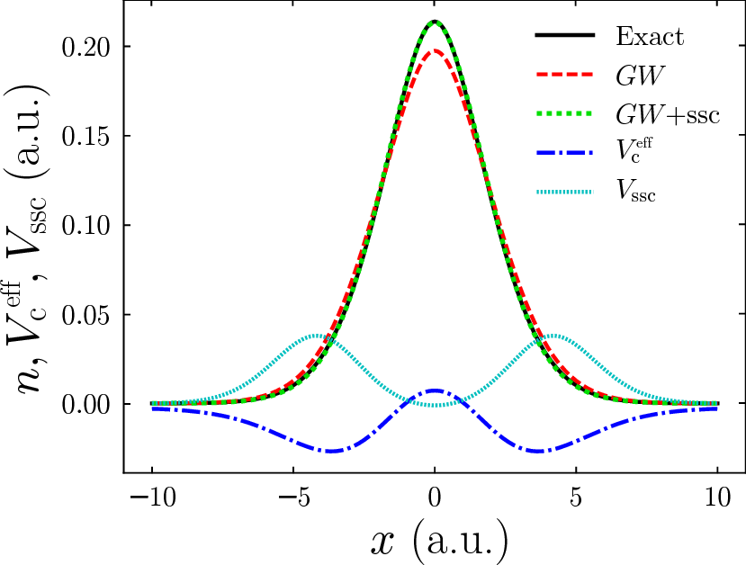
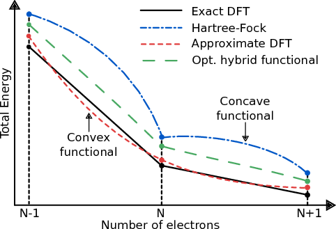
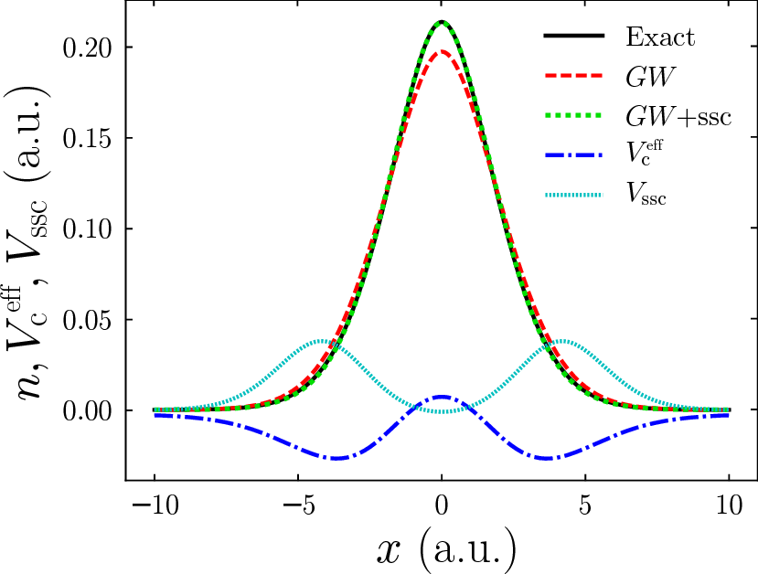
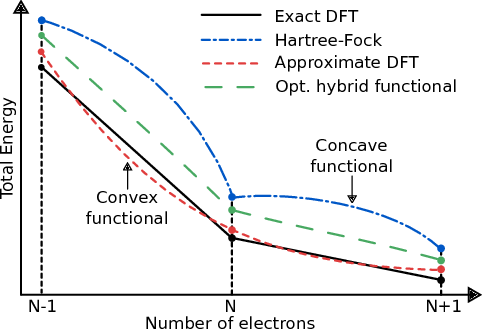

Dr. Jack Wetherell
Theoretical Physicist
Research Interests
My research is primarily focused on systems of interacting electrons. The goal is to develop theories
able to accurately predict the time-dependence and excitations of electrons in nanostructures, that can then be applied to systems such as
molecular junctions, single molecules or atoms. The understanding and accurate modeling of such systems is crucial to technologies such
as integrated circuits. The approach is to study model systems of several electrons that, using efficient computational techniques, can be solved exactly.
This information is used to highlight, understand and quantify the failings of standard approximations, thus informing the development of improved novel methods.
Many-Body Perturbation Theory
My main branches of research involve investigating existing, and developing novel, corrections to methods within Many-Body Perturbation Theory (MBPT). MBPT is an intuitive theory that describes how a system responds when electrons are added and removed, with central concepts of the many-body Green's function and screened interaction. To date we are investigating the effect of the many flavors of the GW approximation on the electron density, associated Kohn-Sham potentials and quasi-particle energies by comparing to the exact quantities.  We are currenty using this to develop models of the electron screening that capture the correct behavior of the most well-performing GW flavors, without the onerous computation cost they entail. Thus far we have developed a novel vertex correction to the self-energy within a GW calculation that eliminates the unwanted effect of the well-known self-screening error with a very small additional computational cost [J. Wetherell et al. Physical Review B (Rapid Communications) 97 121102(R) (2018)].
We have also used these model systems to illustrate that, unlike Kohn-Sham density functional theory, many-body perturbation theory methods such as Hartree-Fock and the GW approximation exhibit Kohn’s concept of nearsightedness [J. Wetherell et al. Physical Review B 99 045129 (2019)]. This means that the potential describing one subsystem needs not contain any additional features due to the presence of surrounding subsystems. This is of particular importance when modeling molecules. See the following video (first presented at the ETSF Young Researcher's Meeting 2019) on this branch of research:
Time-Dependent Density Functional Theory
As well as the exact ground-state density of our systems, we also have access to the exact time-dependent density and Kohn-Sham potential. We have recently shown that LDAs (Local Density Approximations) can be constructed in finite systems from 'slab-like' systems of 1, 2 and 3 electrons [M. T. Entwistle et al. Physical Review B 94 205134 (2016)]. We showed that these local approximations when applied adiabatically as the time-dependent exchange-correlation potential before very poorly for the time-dependent density in tunneling system. Using the accurate self-energy approximations developed in our MBPT work, I am looking at developing much more accurate time-dependent exchange-correlation functionals.
Machine Learning
The Connector Approach
Hybrid Functionals
Hybrid functionals are usually considered the meeting point between DFT (LDA or PBE etc) and MBPT (Hartree-Fock). By mixing these potentials together via a linear mixing parameter one can generate more accurate results than the individual methods alone.  We explored the effect of determining the mixing parameter via enforcing Koopermans' condition to hold in our model systems. We show that this method yields strikingly accurate densities [A. R. Elmaslmane and J. Wetherell et al. Physical Review Materials (Rapid Communication) 2 040801(R) (2018)].
The iDEA Code
I am a developer of the interacting Dynamic Electrons Approach (iDEA) code. This code is a Python software suite (with Cython extensions) developed in Rex Godby's group at the University of York since 2010. It has the capability to compute the exact ground-state and time-dependent properties of simple 1D model systems of few electrons. Along
with a suite of existing and novel approximations to DFT, TDDFT and MBPT for comparison. All of the work described above was carried out primarily using the iDEA code.
It has the capability to compute the exact ground-state and time-dependent properties of simple 1D model systems of few electrons. Along
with a suite of existing and novel approximations to DFT, TDDFT and MBPT for comparison. All of the work described above was carried out primarily using the iDEA code.
Many-Body Perturbation Theory
My main branches of research involve investigating existing, and developing novel, corrections to methods within Many-Body Perturbation Theory (MBPT). MBPT is an intuitive theory that describes how a system responds when electrons are added and removed, with central concepts of the many-body Green's function and screened interaction. To date we are investigating the effect of the many flavors of the GW approximation on the electron density, associated Kohn-Sham potentials and quasi-particle energies by comparing to the exact quantities.  We are currenty using this to develop models of the electron screening that capture the correct behavior of the most well-performing GW flavors, without the onerous computation cost they entail. Thus far we have developed a novel vertex correction to the self-energy within a GW calculation that eliminates the unwanted effect of the well-known self-screening error with a very small additional computational cost [J. Wetherell et al. Physical Review B (Rapid Communications) 97 121102(R) (2018)].
We have also used these model systems to illustrate that, unlike Kohn-Sham density functional theory, many-body perturbation theory methods such as Hartree-Fock and the GW approximation exhibit Kohn’s concept of nearsightedness [J. Wetherell et al. Physical Review B 99 045129 (2019)]. This means that the potential describing one subsystem needs not contain any additional features due to the presence of surrounding subsystems. This is of particular importance when modeling molecules. See the following video (first presented at the ETSF Young Researcher's Meeting 2019) on this branch of research:
Time-Dependent Density Functional Theory
As well as the exact ground-state density of our systems, we also have access to the exact time-dependent density and Kohn-Sham potential. We have recently shown that LDAs (Local Density Approximations) can be constructed in finite systems from 'slab-like' systems of 1, 2 and 3 electrons [M. T. Entwistle et al. Physical Review B 94 205134 (2016)]. We showed that these local approximations when applied adiabatically as the time-dependent exchange-correlation potential before very poorly for the time-dependent density in tunneling system. Using the accurate self-energy approximations developed in our MBPT work, I am looking at developing much more accurate time-dependent exchange-correlation functionals.
Machine Learning
The Connector Approach
Hybrid Functionals
Hybrid functionals are usually considered the meeting point between DFT (LDA or PBE etc) and MBPT (Hartree-Fock). By mixing these potentials together via a linear mixing parameter one can generate more accurate results than the individual methods alone.  We explored the effect of determining the mixing parameter via enforcing Koopermans' condition to hold in our model systems. We show that this method yields strikingly accurate densities [A. R. Elmaslmane and J. Wetherell et al. Physical Review Materials (Rapid Communication) 2 040801(R) (2018)].
The iDEA Code
I am a developer of the interacting Dynamic Electrons Approach (iDEA) code. This code is a Python software suite (with Cython extensions) developed in Rex Godby's group at the University of York since 2010.